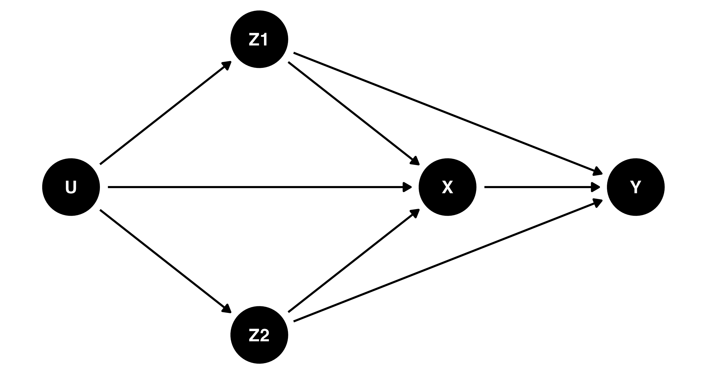
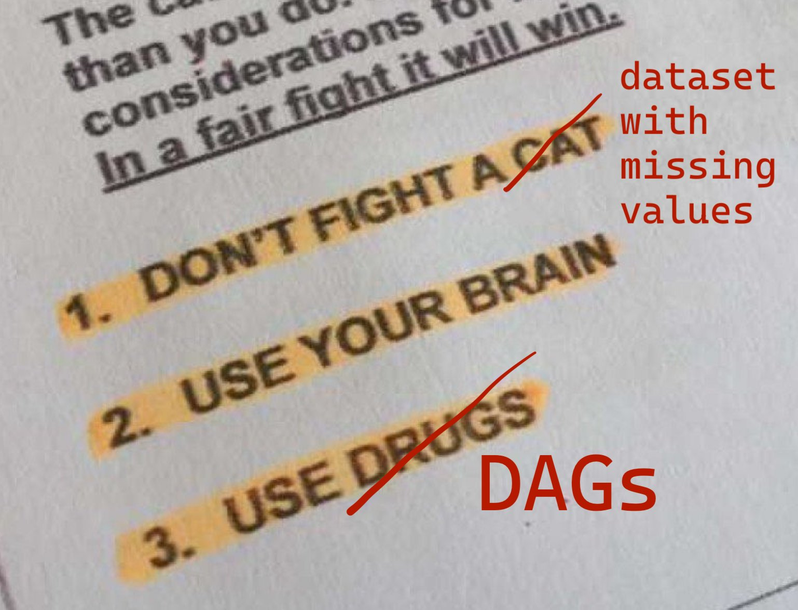
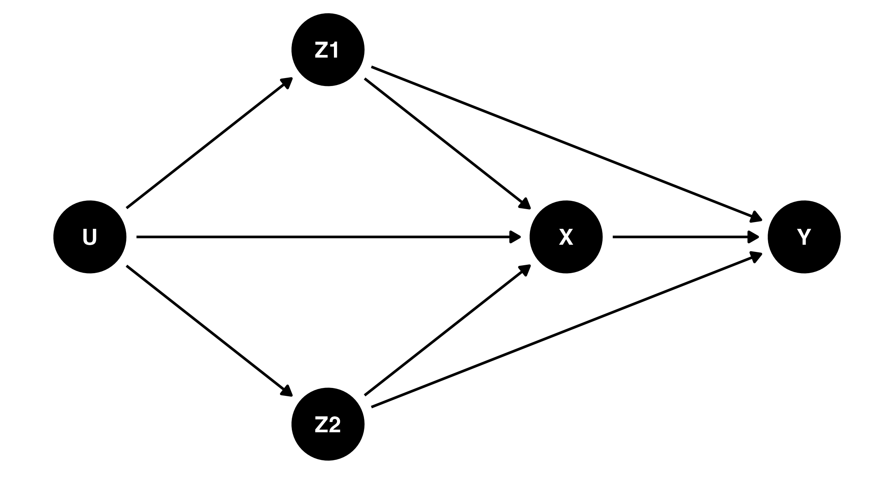
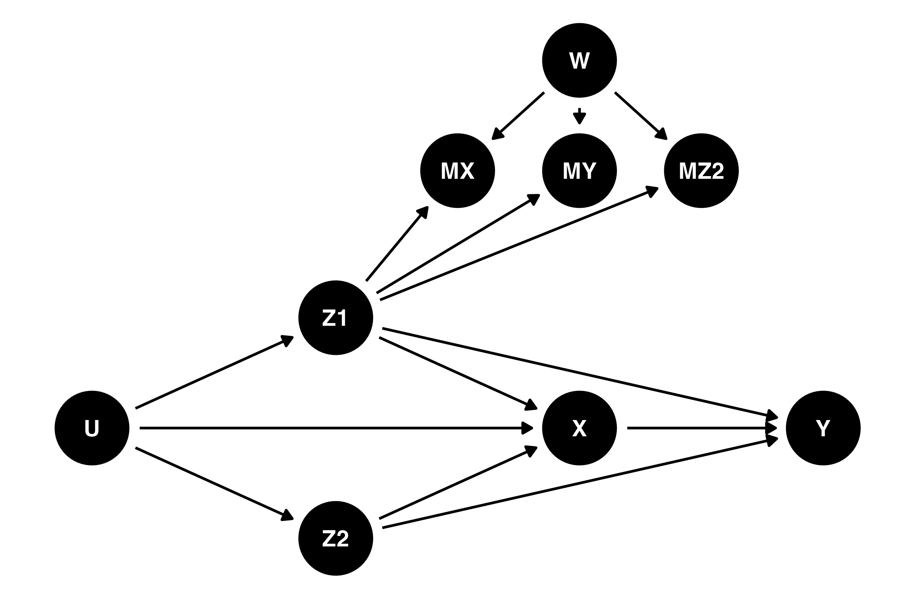
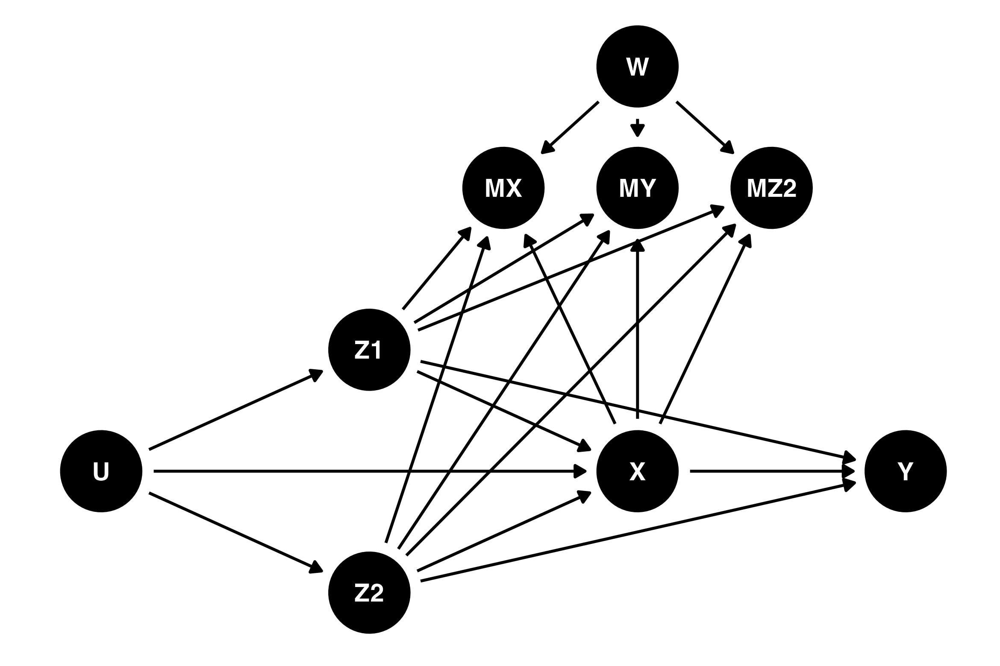
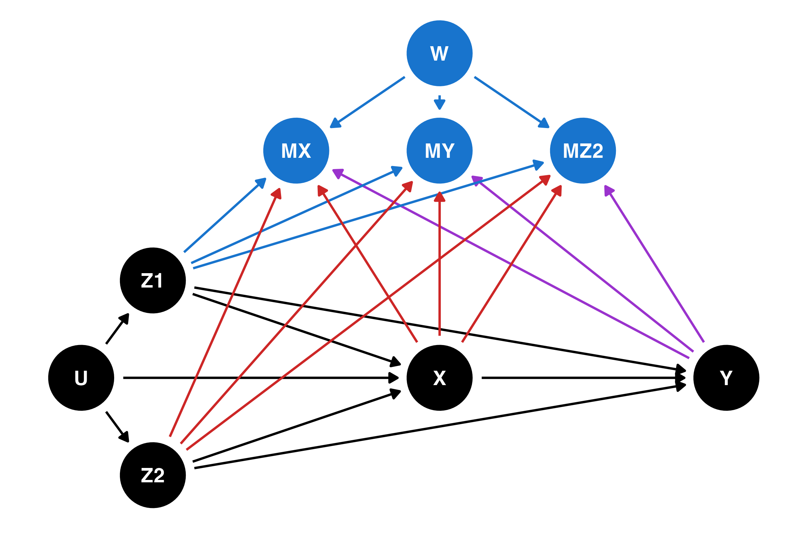

dag_nomiss <- dagify(
Y ~ X + Z1 + Z2,
X ~ Z1 + Z2 + U,
Z1 ~ U,
Z2 ~ U
)
coordinates(dag_nomiss) <- list(
x = c(U = 0, Z1 = 1, Z2 = 1, X = 2, Y = 3),
y = c(U = 0, Z1 = 1, Z2 = -1, X = 0, Y = 0)
)
ggdag(dag_nomiss) + theme_dag()
Cameron Patrick
June 28, 2023
Missing data refers to data which was intended to have been collected but was not, and is a common scenario in biomedical and social science research. Correctly analysing datasets that have missing data requires extra care and consideration to produce correct results.
The best method for dealing with missing data depends on the underlying process causing the missingness. There is no single approach that is always the best, and the terminology commonly used to describe missingness doesn’t directly relate to what analysis methods perform best. In this blog post I’ll explain how to describe missing data processes using causal diagrams (DAGs) and provide some references to help choose an analysis based on that.

The most common classification for missing data mechanisms is as either Missing Completely at Random (MCAR), Missing at Random (MAR), or Missing Not at Random (MNAR). This classification is based on concepts first introduced in Rubin (1976). These terms are widespread, but can be confusing when first encountered because they do not mean quite what you might expect them to mean.
Data is considered to be Missing Completely at Random (MCAR) if the probability of being missing does not depend on the values of any of the variables in the data, whether those values are missing or observed (Little & Rubin, 2014, p. 12). In other words, the missingness cannot be related to the research question of interest (Lee et al., 2021).
Data is Missing at Random (MAR) if the probability of being missing depends only on data that was observed (Little & Rubin, 2014, p. 12). This term is misleading if encountered without context, as a plain-language interpretation suggests it may mean something more like MCAR. However, MCAR is a stricter condition than MAR. In other words, if data is MCAR, it is also considered MAR. There are a few subtly different ways of defining this concept mathematically; Seaman et al. (2013) goes into the detail for those who are interested.
Data is Missing Not at Random (MNAR) if it’s not Missing at Random (Little & Rubin, 2014, p. 12). At least that’s relatively straightforward. In other words, the probability of data being missing is related to what the missing values would have been, had we observed them. It is often implied that MNAR data is a lost cause for statistical analysis, but later in this post we will see specific examples of MNAR where common statistical procedures produce valid results for common questions.
Whether data is classified as MAR or MNAR depends on more than just the variables with missing data. It also depends on the availability of additional variables in the dataset which may be able to explain the probability of missingness.
Rubin (1976) is often cited as the source of this classification system, but didn’t actually introduce the terms Missing Completely at Random or Missing Not at Random, only Missing at Random. Rubin originally defined an additional condition, Observed at Random. Data which is both Missing at Random and Observed at Random is what we would now commonly refer to as Missing Completely at Random. The term Missing Completely at Random came later, in Marini et al. (1980). This history is given in Little (2021) and was also confirmed in a Tweet by Raphael Nishimura: ‘I was curious about that too and did some digging with the authors. Rod said that “Rubin’s 1976 Biometrika paper defines MAR and OAR (observed at random) but he may not have put the two together.” Don confirmed it and added that “MCAR was first formally defined in a joint paper with Marini and Olsen, I think in 1980, in a more applied paper.”’
Sometimes you may hear missing data described as “ignorable” or “non-ignorable”. These terms are also potentially misleading. “Ignorable” missing data doesn’t mean that you can just ignore the fact that you have missing data when doing an analysis. This term was defined in Rubin (1976) to mean that (1) the data is MAR; (2) the likelihood can be factorised into a part relating to the missingness probability and a part relating to the distribution of the underlying data. These provide a sufficient condition for missing data to be dealt with using likelihood-based methods.
Unfortunately, there’s no way to determine the missing data mechanism purely by looking at the data — you need to think about the process generating the data and why some of it is missing. A causal DAG is a good way to reason about the relationship between the variables and their reasons for being missing and can help you decide what analysis to use. I’ll have examples of this later in this blog.
It depends! (I’m statistician, you should have known I would say that.)
Complete cases analysis is unbiased if the data is MCAR. This is a sufficient condition, not a necessary condition (Little, 2021): there are situations where complete cases may be valid, or at least provide a valid estimate of a particular quantity of interest, under MAR or MNAR. Depending on the amount of missing data, complete cases analysis may be inefficient (i.e., have lower power than other methods) because only cases where no variables have missing values are used in the analysis.
Multiple imputation, likelihood-based methods and full Bayesian methods are unbiased if the data is MAR or MCAR (Little, 2021). Multiple imputation is approximately equivalent to a maximum-likelihood method if the underlying model is the same (Collins et al., 2001).
In some specific MNAR situations, either or both of the above methods may still be valid, depending on what you’re trying to estimate (White & Carlin, 2010).
Causal diagrams are used to represent causal relationships between variables in a study (Pearl, 1995). These relationships are shown visually using a directed acyclic graph (DAG), which is a mathematical term for a bunch of circles with arrows between them. The circles (nodes) represent variables and arrows (edges) between them represent direct causal pathways. The direction of the arrows represents the direction of causation, and a valid DAG never has a path leading from a particular point back to that same point (a “cycle” in mathematician-speak). If there is no path following the arrows between two variables in a DAG, there is no causal connection between them.
The structure of the DAG behind your data cannot be inferred just from looking at the data. It needs to come from substantive expertise about the underlying variables in the data, their relationship to each other, and how the data was collected.
The idea of using a DAG to represent missing data assumptions was first introduced in Mohan & Pearl (2014). To provide more practical advice for specific scenarios, Moreno-Betancur et al. (2018) introduces “canonical” causal diagrams for missing data in the setting where we want to estimate the relationship between an outcome Y and an exposure X (that’s epidemiologist-speak for the main predictor of interest), adjusting for some confounding variables which may influence both the outcome and the exposure. The confounding variables may be either completely observed (Z1) or have some missing data (Z2). There may also be some unknown, unmeasured factors U which affect the exposure and the confounders.
The code below plots the DAG corresponding to the scenario above using the R packages dagitty (Textor et al., 2017) and ggdag. You don’t need to understand the R code to use and apply DAGs but it is provided as an example for those who may want to make causal diagrams for their own studies. The first part of the code describes the underlying relationships between the variables, using the same syntax used to describe regression models in R. The second part of the code sets up the visual coordinates used for plotting the DAG — an aesthetic consideration only.
dag_nomiss <- dagify(
Y ~ X + Z1 + Z2,
X ~ Z1 + Z2 + U,
Z1 ~ U,
Z2 ~ U
)
coordinates(dag_nomiss) <- list(
x = c(U = 0, Z1 = 1, Z2 = 1, X = 2, Y = 3),
y = c(U = 0, Z1 = 1, Z2 = -1, X = 0, Y = 0)
)
ggdag(dag_nomiss) + theme_dag()
This DAG is called a complete-data DAG, or c-DAG. It represents the causal relationships between the variables if all of them had been completely observed.
To represent possible causes of missing data, we can introduce three new variables in the DAG: MX, MY and MZ2, representing whether or not the exposure, outcome, or incomplete confounders are missing. Adding these variables produces a missingness DAG, or m-DAG. Moreno-Betancur et al. (2018) also considers unmeasured causes of missingness (W) which are not related to any of the substantive variables in the study but do affect the probability of missingness.
If we interpret the c-DAG above as an m-DAG, the absence of arrows to MX, MY and MZ2 would mean that there is no causal relationship between any of the variables and their missingness. So the c-DAG is the m-DAG for MCAR. This scenario would be quite unusual in most real studies, unless the missing data was deliberately planned.
Figure 2 in Moreno-Betancur et al. (2018) provides 10 examples of m-DAGs, with different combinations of the following features:
The first of these canonical DAGs, m-DAG A, is an example of a MAR process, where the missingness is only related to completely-observed confounders (Z1) and unmeasured variables unrelated to other variables in the study (W). We can visualise that DAG using the code below:
dag_a <- dagify(
Y ~ X + Z1 + Z2,
X ~ Z1 + Z2 + U,
Z1 ~ U,
Z2 ~ U,
MX ~ Z1 + W,
MY ~ Z1 + W,
MZ2 ~ Z1 + W
)
coordinates(dag_a) <- list(
x = c(U = 0, Z1 = 1, Z2 = 1, X = 2, Y = 3,
MX = 1.5, MY = 2, MZ2 = 2.5, W = 2),
y = c(U = 0, Z1 = 0.75, Z2 = -0.75, X = 0, Y = 0,
MX = 1.75, MY = 1.75, MZ2 = 1.75, W = 2.5)
)
ggdag(dag_a) + theme_dag()
In this DAG, both complete cases analysis and multiple imputation provide valid estimates of not just the relationship between the exposure and the outcome, but also the complete distribution of the outcome. This isn’t something that should be obvious just from looking at the DAG — there’s a derivation in the supplementary materials for Moreno-Betancur et al. (2018) for this and the other DAGs, with the results summarised in Tables 1 and 2 of that paper.
In other missing data situations, it may be possible to obtain the effect of the exposure but not, for example, the population mean of the outcome. In some situations, it may not be possible to obtain a valid estimate of either.
The figure below shows m-DAG E, which is an example of a MNAR process. The probability of missingness in all variables is affected by both the exposure X (which may itself have missing values) and partially-observed confounders Z2. Perhaps surprisingly, even though this missingness process is MNAR, it is possible to obtain a valid estimate of the relationship between the exposure and the outcome using either complete cases analysis or multiple imputation. However, it is not possible to recover the overall mean of the outcome.
dag_e <- dagify(
Y ~ X + Z1 + Z2,
X ~ Z1 + Z2 + U,
Z1 ~ U,
Z2 ~ U,
MX ~ Z1 + Z2 + X + W,
MY ~ Z1 + Z2 + X + W,
MZ2 ~ Z1 + Z2 + X + W
)
coordinates(dag_e) <- list(
x = c(U = 0, Z1 = 1, Z2 = 1, X = 2, Y = 3,
MX = 1.5, MY = 2, MZ2 = 2.5, W = 2),
y = c(U = 0, Z1 = 0.75, Z2 = -0.75, X = 0, Y = 0,
MX = 1.75, MY = 1.75, MZ2 = 1.75, W = 2.5)
)
ggdag(dag_e) + theme_dag()
The final example in this blog is m-DAG J, which is another MNAR process. In this example, missingness is also affected by the value of the outcome Y. For this m-DAG, it is not possible to recover the relationship between the outcome and the exposure.
dag_j <- dagify(
Y ~ X + Z1 + Z2,
X ~ Z1 + Z2 + U,
Z1 ~ U,
Z2 ~ U,
MX ~ Z1 + Z2 + X + Y + W,
MY ~ Z1 + Z2 + X + Y + W,
MZ2 ~ Z1 + Z2 + X + Y + W
)
coordinates(dag_j) <- list(
x = c(U = 0, Z1 = 1, Z2 = 1, X = 2, Y = 3,
MX = 1.5, MY = 2, MZ2 = 2.5, W = 2),
y = c(U = 0, Z1 = 0.75, Z2 = -0.75, X = 0, Y = 0,
MX = 1.75, MY = 1.75, MZ2 = 1.75, W = 2.5)
)
ggdag(dag_j) + theme_dag()
Once you’ve drawn a DAG for your study, you can compare it to the canonical DAGs in Moreno-Betancur et al. (2018). For canonical DAGs A, B, D and E, complete cases analysis was shown to provide a valid estimate of the relationship between the outcome and the exposure. For canonical DAGs A, B, C, D and E, multiple imputation was shown to provide a valid estimate of the relationship between the outcome and the exposure. Lee et al. (2023) provides further practical guidance for data analysis using missingness DAGs.
White & Carlin (2010) considers some scenarios where covariates are missing and compares complete cases and multiple imputation. In some scenarios, complete cases analysis was unbiased while multiple imputation was not; in other scenarios, the reverse was true.
Randomised clinical trials provide some additional guarantees about the nature of the missing data process which observational studies do not: the exposure is completely observed and known to be unrelated to baseline covariates. Sullivan et al. (2018) considers several methods for dealing with missing data in randomised trials.
The papers above provide examples of situations where multiple imputation is not necessarily better than simpler methods, as well as situations where multiple imputation is required.